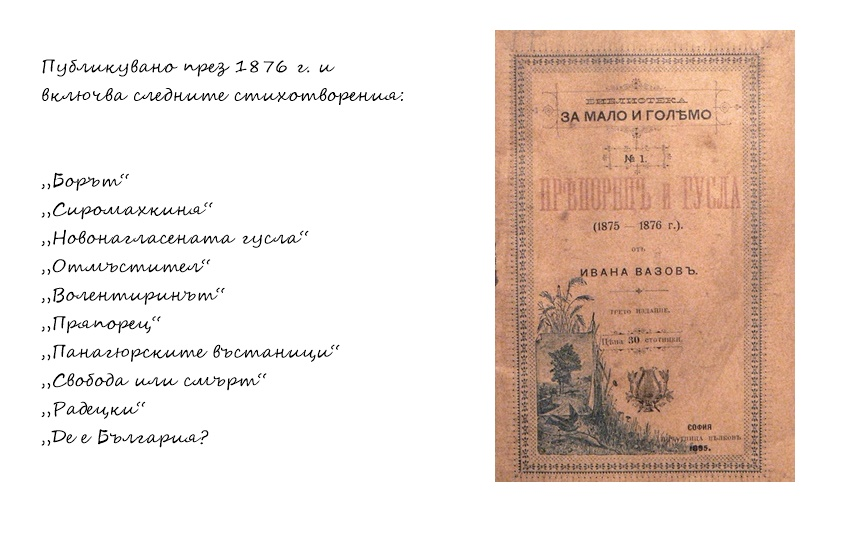

Българийо, за тебе те умряха, една бе ти достойна зарад тях, и те за теб достойни, майко, бяха И твойто име само кат мълвяха, умираха без страх.
През 1870г. Вазов отпечатва първото си стихотворение - "Борба".
През 1872г. издава стихотворението "Борът", което е първото му
публично коментирано стихотворение.
До 1875-1876г. Вазов пише и
любовни стихотворения. През 1876г. отпечатва първата си стихосбирка -
"Пряпорец и Гусла", но не подписва книгата с истинското си име, а
с псевдонима Пейчин.

Това става в Букурещ. В нея той включва
"Панагюрските въстаници", по-известно като "Боят настана".
Повечето от стихотворенията
в „Пряпорец и гусла” са писани в Сопот, а останалите
в Букурещ. Произведенията са писани като бунтовнически
песни, по-голямата част от които излизат в стихосбирката.
За създаването им, Вазов се е повлиял от новите революционни
идеи и от книжката на Христо Ботев и Стефан Стамболов
"Песни и стихотворения от Ботйова и Стамболова".
Сбирката „Пряпорец и гусла” е издадена изцяло на
негови разноски, а е разпространявана и продавана от
търговеца Д. В. Манчов. Иван Вазов не получава пари
от продажбата ѝ. Тогава поета си поставя псевдонима
Пейчин, подсказан му от Манчов. Предпочел подписването
с псевдоним, за да не излага баща си и братята си на
преследване в Турция.
През 1877г. излиза втората стихосбирка на Вазов - "Тъгите на България",
която вече е подписана от Вазов. Третата стихосбирка на Вазов излиза от
печат година по-късно - през 1878г. и носи заглавието "Избавление".
През 1881 г. Вазов издава стихосбирката "Гусла".